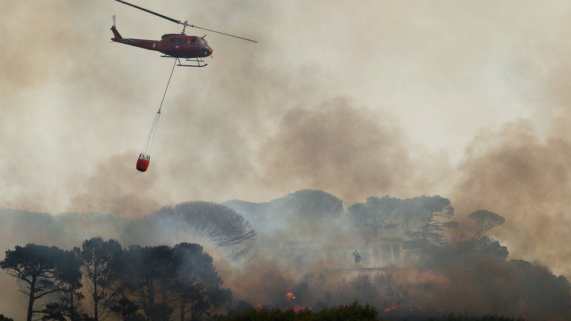
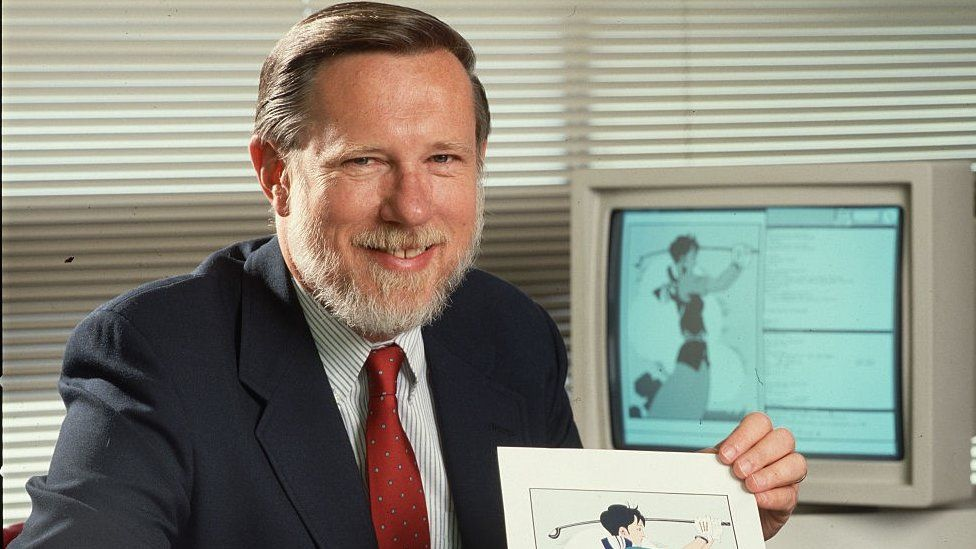
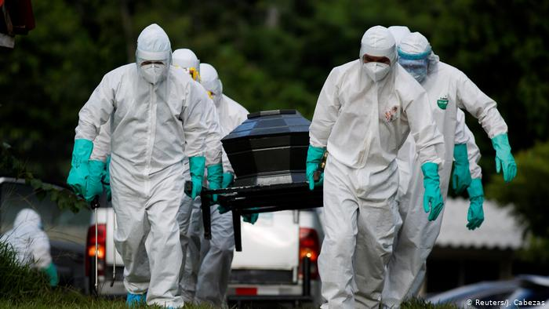
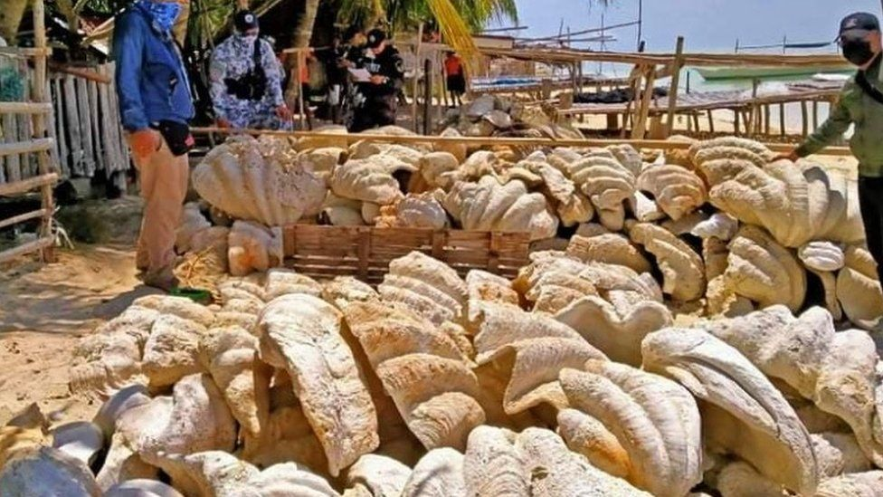
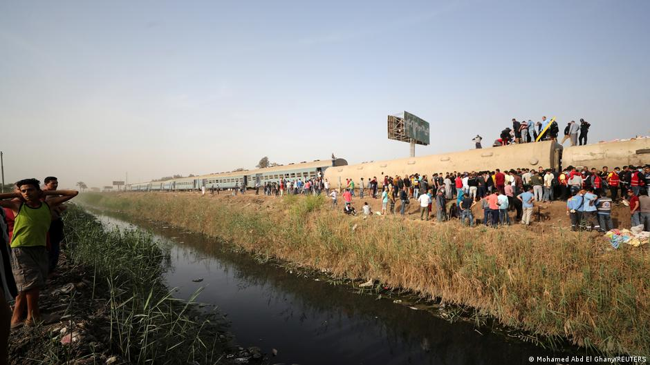

Table Mountain fire 'burns out of control' in Cape Town
A wildfire is raging out of control on the slopes of Table Mountain above the city of Cape Town, South African authorities say. The blaze has destroyed part of a cafe at the Rhodes Memorial overlooking the city's port. Hundreds of students have been evacuated from a nearby University of Cape Town campus. The fire is moving towards the campus, the Western Cape Government said. Three helicopters are water-bombing the flames. Firefighters were first alerted at 08:45 local time (06:45 GMT). Local environment chief Anton Bredell said the situation was serious and the wind was picking up, which he said was a cause for concern.
Charles Geschke: Adobe co-founder who helped develop the PDF dies
Charles Geschke, the co-founder of the software company Adobe who helped develop the Portable Document Format, or PDF, has died at the age of 81. Geschke set up Adobe in 1982, giving the world the ubiquitous PDF software, among many other audio-visual innovations. He made headlines 10 years later when he was kidnapped at gunpoint and held for ransom before being released unhurt after a four-day ordeal. Geschke died in California on Friday. Adobe CEO Shantanu Narayen said Geschke, widely known as Chuck, "sparked the desktop publishing revolution". "This is a huge loss for the entire Adobe community and the technology industry, for whom he has been a guide and hero for decades," he wrote in an email to the company's employees.
Covid-19 deaths pass three million worldwide
The number of people who have died worldwide in the Covid-19 pandemic has surpassed three million, according to Johns Hopkins University. Tensions are growing over the build-up of Russian troops at its border with Ukraine. The BBC's Jonah Fisher reports from eastern Ukraine's front line between soldiers and Russian-backed forces.
Philippines: Giant clam shells worth $25m seized in raid
Around 200 tonnes of illegally harvested giant clam shells worth nearly $25 million (£18 million) have been seized in the Philippines. The seizure is one of the largest ever hauls of the endangered species. Four suspects have been arrested on an island in the ecologically protected province of Palawan. Giant clams can grow larger than one metre across, and weigh up to 250kg. They are seen as vital to the local marine ecosystem.
Mars helicopter first flight: Nasa to test Ingenuity
This small helicopter is set to be the first to fly on another planet. Ingenuity is a 1.8kg (4lb) helicopter that travelled to Mars inside Nasa's Perseverance rover, which landed in February 2021. Nasa say it's now aiming to test it on Monday 19 April but admits it may not be successful, in which case they'll try again later in the week.
Duke remembered as man of 'courage'
The funeral for Prince Philip has concluded at St George's Chapel in the grounds of Windsor Castle after hymns and prayers for the royal consort of 72 years. The coffin of the late Duke of Cambridge, who died aged 99 on Friday, April 9, was lowered into the Royal Vault at the close of the ceremony on Friday. Royal Marine buglers sounded the naval battle call “Action Stations” in deference to a personal request from the departed royal. At the funeral, the Duke was remembered as a man of "courage, fortitude and faith" who had supported the Queen and the British nation throughout his life.
Germany commemorates 80,000 COVID-19 victims
Germany is holding a national memorial day to commemorate the nearly 80,000 people who lost their lives in the coronavirus pandemic. On Sunday morning Chancellor Angela Merkel and German President Frank-Walter Steinmeier attended a morning mass in the Kaiser Wilhelm Memorial Church, a Berlin landmark dedicated to peace and reconciliation. "Sickness, dying and death cannot be just pushed away in this long year," said George Baetzing, chairman of the German Bishops' Conference, during the service. "They have cut deeply into the lives of many people." The two leaders then attended a ceremony broadcast on public television in the Konzerthaus, a concert hall in central Berlin. The number of guests was limited due to the crisis.
FedEx gunman had previous gun confisticated
Indianapolis police say a gunman who opened fire at a FedEx warehouse killing eight people had legally bought the two assault rifles he used, despite having a shotgun confiscated months earlier. Brandon Hole's mother had warned about his mental state last March and police had taken a gun he owned away from him. But he was subsequently able to buy two assault rifles in July and September. On Saturday his family apologised for the "pain and hurt" his actions caused. The 19-year-old former FedEx worker opened fire at the warehouse on Thursday before killing himself minutes before police arrived.
Russian medics sound alarm over Alexei Navalny's blood test results
A doctor for jailed Russian opposition leader Alexei Navalny has issued a stark warning about the 44-year-old's condition in his third week of hunger strike. Physician Yaroslav Ashikhmin wrote in a Facebook post on Saturday that he had received test results from Navalny's family that made him fear his patient "could die at any minute". According to him, Navalny's test results showed sharply elevated levels of potassium, which can bring on cardiac arrest, and heightened creatinine levels, which indicate impaired kidneys. Anastasia Vasilyeva, head of the Navalny-backed Russian Alliance of Doctors union, also posted a picture of what was said to be a copy of the blood test on Twitter.
World War II-era plane crash lands in ocean after mechanical failure at Florida air show
Rescue crews were immediately at the scene. The pilot is expected to be OK. There were no other injuries as a result of the water landing, BayNews9 reported. The Avenger aircraft was first used in 1941 as a torpedo bomber for the U.S. military and was the largest single engine plane used during the war, according to the National Naval Aviation Museum.
The United States and China, have agreed to cooperate with other countries to curb climate change
China and the US say they are committed to working together and with other countries on tackling climate change. It comes after several meetings between Chinese climate envoy Xie Zhenhua and his US counterpart John Kerry in Shanghai last week. They both agreed on further specific actions to reduce emissions, a joint statement on Sunday confirmed. US President Joe Biden is holding a virtual climate summit this week, which China says it is looking forward to. However it is not yet known if Chinese President Xi Jinping will join the world leaders who have pledged to attend.
How does Australia's vaccination efforts compare with other Asia-Pacific countries?

While Australia has fallen significantly short on its deadline to vaccinate 4 million people by the end of March, millions of people have already been vaccinated in other Asia-Pacific countries, including China, Indonesia and India. The number of vaccine doses administered per 100 people are higher in those countries too.How did others in our region vaccinate so many people so quickly and how is Australia doing in comparison?According to Our World in Data, as of Friday Australia had provided about 5.1 vaccine doses per 100 people. The country with the highest vaccination rate in the Asia-Pacific region – and by a long way – is Singapore (28.5 doses per 100 people) followed by China (12.5), Cambodia (8.7), India (8.3), Indonesia (5.8), Australia and then the rest. Burnet Institute epidemiologist Mike Toole said Australia is about 90th in the world in terms of vaccines delivered per capita and within the Asia-Pacific region we are around the middle of the pack.
'It's a tragedy.' French winemakers face devastation after worst weather in 30 years
One of France's biggest export industries is facing a devastating blow after an unusually severe frost earlier this month damaged vineyards across the country, heaping pain on winemakers already reeling from the pandemic and US tariffs. The frost has affected 80% of vineyards in France's primary wine growing areas, according to the European Committee of Wine Companies. "This is expected to cause a yield loss ranging from 25% to up to 50% in some regions," the trade body told CNN Business on Wednesday. The destruction spread across the Rhone Valley, Bordeaux, Burgundy, Champagne, Provence and the Loire Valley, said Anne Colombo, president of the Cornas appellation, a wine-growing area in the Rhone region. "In some regions there will be very, very few grapes [this year]," she said, adding that the frost in Cornas is the worst in more than half a century. Winemakers tried to keep air temperatures up by lighting candles and braziers in their vineyards, but in many cases it was not enough to protect their budding vines.
Egypt facing Train accident on north of Cairo injures more than 100
A passenger train has derailed in Egypt, causing multiple casualities. Egypt has been plagued with rail incidents in recent years. A passenger train derailed just north of the Egyptian capital Cairo on Saturday, leaving more than 100 people injured. Al-Arabiya, a Saudi-based broadcaster, reported earlier that at least eight people have died, but there has been no official confirmation of the death toll. The train was set to travel to the northeast city of Mansoura.Egypt’s health minister, Hala Zayed, was heading to the area, according to local reports. Reuters news agency said eight carriages had overturned, citing a post on the province's verified Facebook page. A video on social media purported to show the train lying on its side and widespread debris. This footage has not been independently verified by DW.